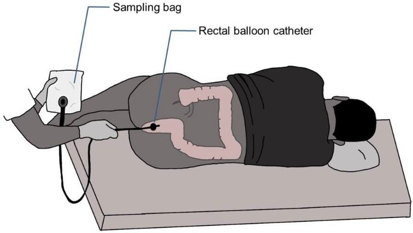

the harvest
once you're tethered to your shame-bag, they run your fart through gas chromatography to get the exact recipe:
i thought fart studies were just goofy “hehe fart in a bag.” turns out, no. that would've been merciful.
instead, scientists bust out the rectal balloon catheter — translation: a tube up the ass, connected to a sampling bag, so every puff of gas gets harvested like it's the macy's day parade.
suddenly it's not “hehe science lol” — it's “strap down, sir; we're about to harvest your methane.”
once you're tethered to your shame-bag, they run your fart through gas chromatography to get the exact recipe:
and because science doesn't know when to stop, some volunteers had to change diets so researchers could compare “before and after” farts.
“subject agrees to fart into bags for 4 weeks straight.”
so next time you see a meme about “fart simulations,” remember: real fart science is darker — not just funny bags of gas, but actual rectal hardware.
science didn't just take your data — it took your dignity.
💀 shoutout to the brave souls who laid sideways for knowledge.